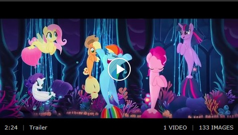

Hasbro and Lionsgate have signed Zoe Saldana for the voice cast of the animated “My Little Pony: The Movie,”
Variety has learned exclusively.
Previously announced voice cast members include Sia, Liev Schreiber,
Taye Diggs, Emily Blunt, Kristin Chenoweth, Uzo Aduba, and Michael Pena. Lionsgate is releasing “My Little
Pony” on Oct. 6, 2017. Jayson Thiessen is directing from a screenplay by Meghan McCarthy, writer and producer
of the “My Little Pony: Friendship Is Magic” animated series.
A dark force threatens Ponyville, and the Mane 6 - Twilight Sparkle, Applejack, Rainbow Dash, Pinkie Pie, Fluttershy, and Rarity - embark on an unforgettable journey beyond Equestria where they meet new friends and exciting challenges on a quest to use the magic of friendship to save their home.
My little Pony trailer.While Martin Scorsese always seems to have a busy schedule, it might have opened up slightly given the recent revelation that he bailed on that Frank Sinatra biopic. The director’s next picture is expected to be the hitman tale “The Irishman,” which will reteam him with his longtime friend Robert De Niro, but according to Jamie Foxx, Scorsese is still going to make a Mike Tyson biopic.